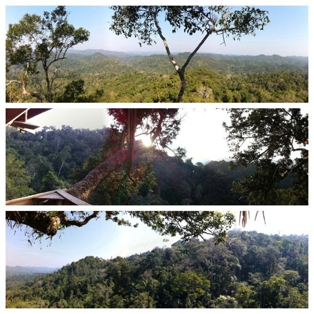

Wed, 09 Feb 2011 01:43:00 · laos · vnsavitri
view of the jungle and mountain taken from the

View of the jungle and mountain taken from the tree house where I stayed for few days. The tree house is built on a very old (but sturdy) tree about 50-60 meters above the ground; hence the zip-lining as it’ll take days to get there back and forth from below.
The jungle is located in Bokeo province in Northern Laos, somewhere near the Golden Triangle area. When one is lucky, one can sometimes spots families of Gibbons and other wild animals roam about.